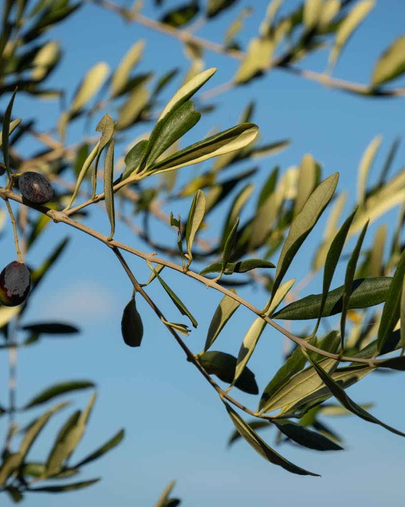
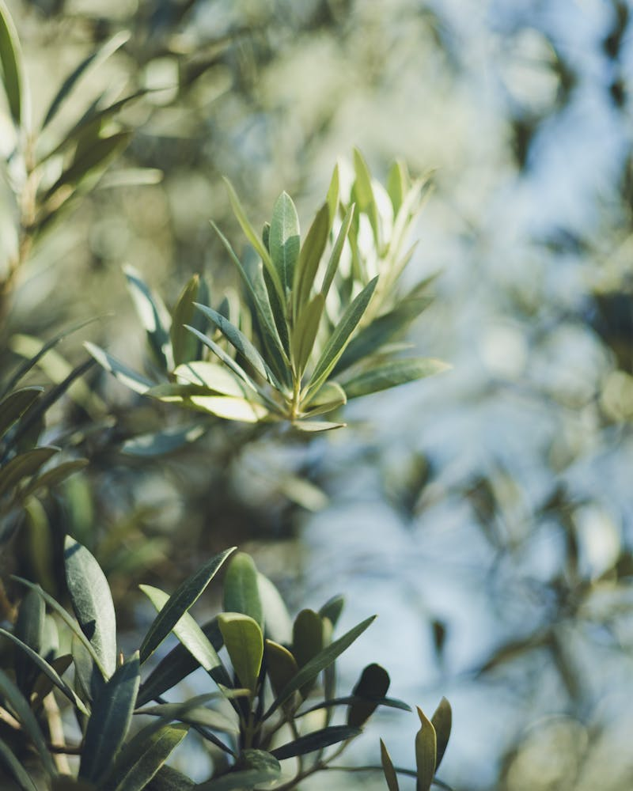
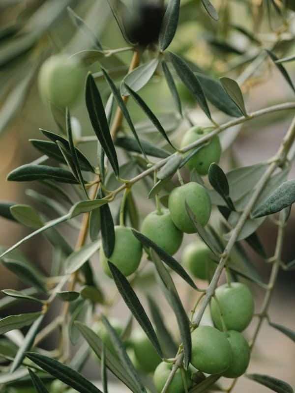
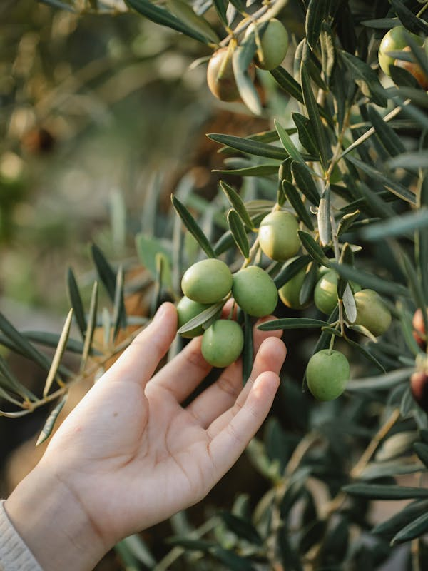
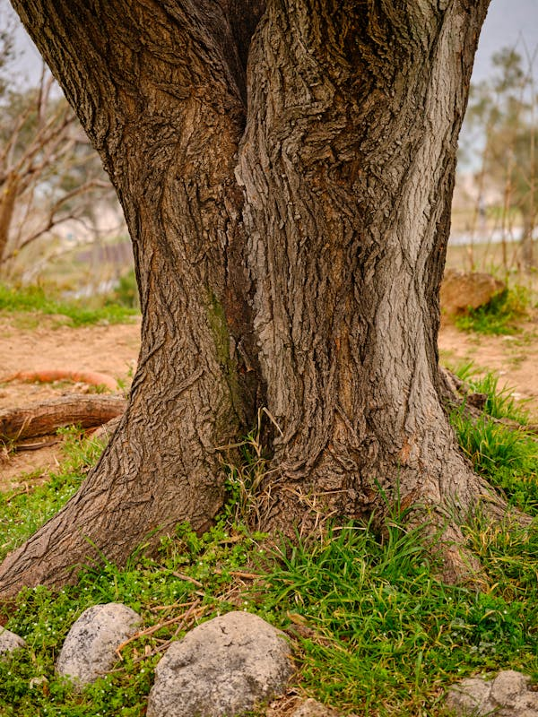
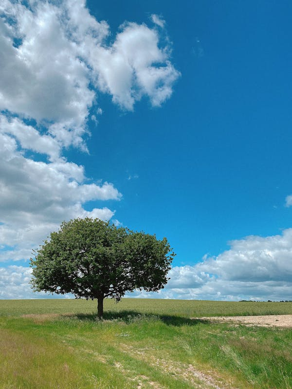
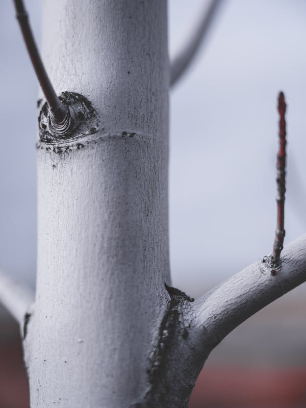
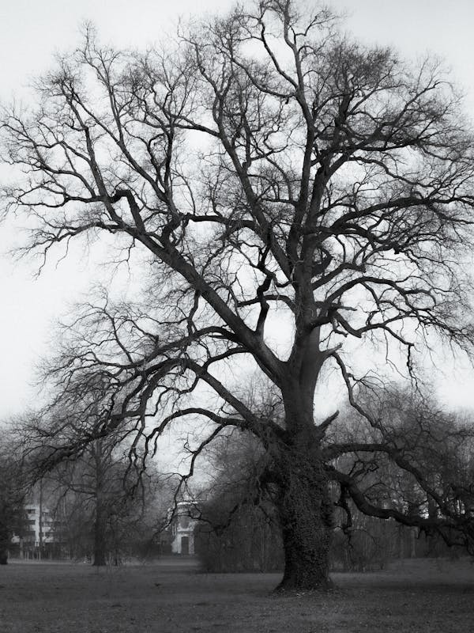

Aldeaquemada · Sierra Morena · Jaén
Antonia y Juan cuidan estos olivos centenarios como lo hicieron sus padres y sus abuelos. Ahora quieren que su pueblo, Aldeaquemada, vuelva a tener la vida que recuerdan.
Conoce nuestra historia
Nuestra historia
Antonia Morales y Juan Alcaide nacieron y crecieron en Aldeaquemada, un pequeño pueblo de Sierra Morena donde el olivo ha sido el centro de todo durante generaciones. Recuerdan una aldea llena de vida: niños en la calle, familias en la cosecha, el sonido del molino. Esa energía es la que quieren recuperar.
Este proyecto nace de un deseo sencillo: que sus olivos centenarios — el mayor patrimonio de esta tierra — ayuden a escribir un nuevo capítulo para Aldeaquemada. Cada olivo que sale de aquí lleva un trozo de Sierra Morena, y cada venta acerca al pueblo el futuro que merece.
El pueblo
Aldeaquemada se encuentra en el Parque Natural de Despeñaperros, en el norte de Jaén. Un paisaje de sierra, encinas y olivares centenarios que ha sido hogar de familias durante siglos. Sus vecinos están decididos a darle un nuevo impulso. Este proyecto pone en valor lo que siempre ha estado aquí — los olivos centenarios — para que Aldeaquemada siga escribiendo su historia.
"Queremos que nuestros nietos puedan crecer aquí, como crecimos nosotros."
— Antonia y Juan

Los olivos
Los olivos de la familia Alcaide Morales han crecido durante siglos en esta tierra de suelos ricos y clima extremo. El resultado son árboles de troncos escultóricos, formas únicas y una resistencia extraordinaria. Cada uno tiene su carácter, su forma, su historia.
Ejemplares
Seleccionamos los ejemplares más singulares por su porte, forma escultórica y carácter. Cada árbol viene con su certificado de origen.






Qué nos hace diferentes
Cada olivo incluye un certificado de origen con su ubicación en Aldeaquemada, edad estimada, medidas y fotografía in situ. Usted conoce la historia completa de su árbol y de la familia que lo ha cuidado.
Le invitamos a visitar Aldeaquemada, conocer a Antonia y Juan, pasear por los olivares y elegir personalmente su árbol. Una experiencia única en Sierra Morena.
Cada olivo que adquiere contribuye directamente a mantener viva la comunidad de Aldeaquemada. Extracción profesional, transporte especializado y entrega en toda España y Europa.
Cómo funciona
Cuéntenos qué tipo de olivo busca: tamaño, forma, destino. Le asesoramos sin compromiso.
Le enviamos fotos y medidas de ejemplares disponibles. Si lo desea, venga a elegirlo en persona.
Extraemos el olivo con cepellón completo, garantizando la integridad del sistema radicular.
Transporte especializado hasta su ubicación. Incluimos guía de plantación y cuidados post-trasplante.
Contacto
Preguntas frecuentes
El precio de nuestros olivos centenarios oscila entre 800€ y 5.000€, dependiendo de la edad, tamaño, perímetro del tronco y forma escultórica del ejemplar. Todos incluyen certificado de origen. El transporte se presupuesta según destino.
Sí, realizamos entregas en toda España y Europa, con experiencia en envíos a Francia, Alemania, Bélgica, Holanda, Suiza y Austria. Gestionamos el transporte especializado con vehículos adaptados para árboles de gran porte.
Por supuesto. Invitamos a nuestros clientes a visitar los olivares en Aldeaquemada, Jaén, en pleno Parque Natural de Despeñaperros. Es una experiencia única que permite elegir personalmente el ejemplar y conocer su entorno original.
El olivo es una de las especies más resistentes al trasplante. Extraemos cada ejemplar con su cepellón completo, garantizando la integridad del sistema radicular. Incluimos una guía detallada de cuidados post-trasplante para asegurar una adaptación óptima.
Cada olivo incluye un certificado con su ubicación original geolocalizada en Aldeaquemada, edad estimada, perímetro de tronco, altura, fotografía in situ y fecha de extracción. Un documento único que acredita la historia de su árbol.
Sí, colaboramos con estudios de paisajismo, viveros, hoteles boutique, restaurantes y promotoras inmobiliarias. Ofrecemos condiciones especiales para profesionales y pedidos de varios ejemplares.